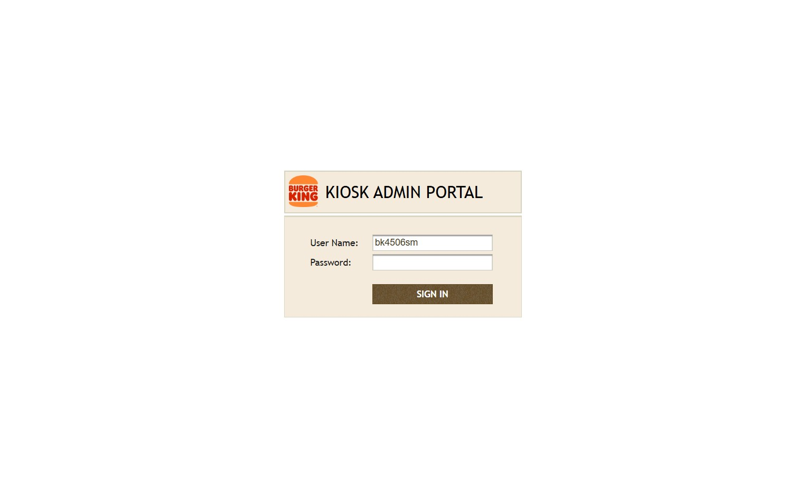
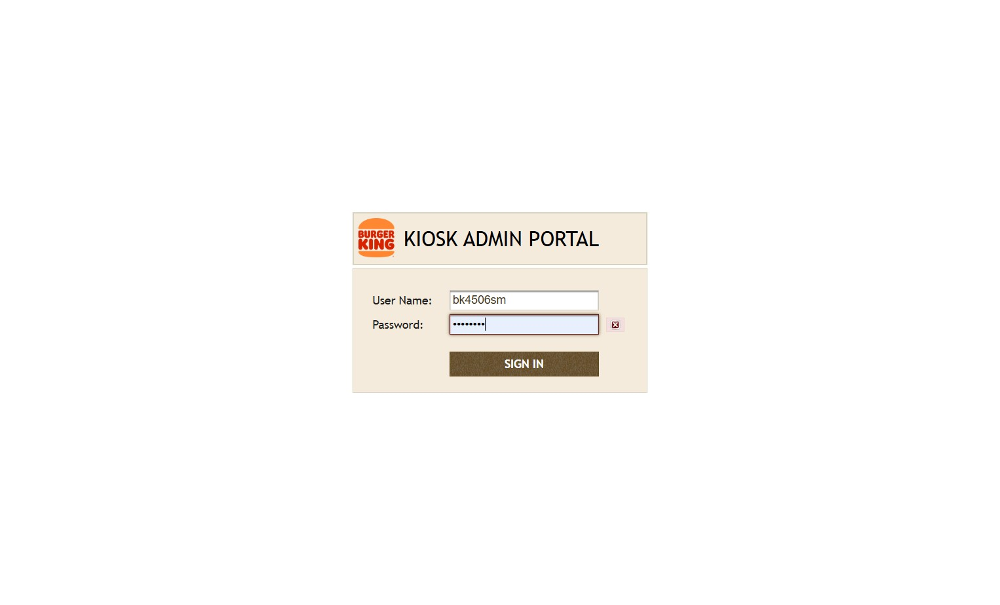
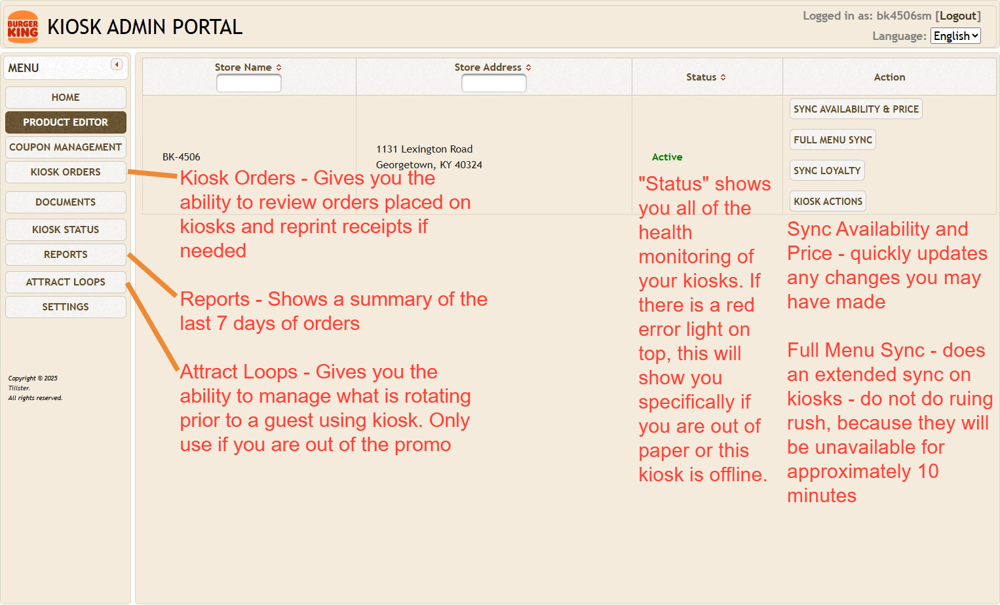
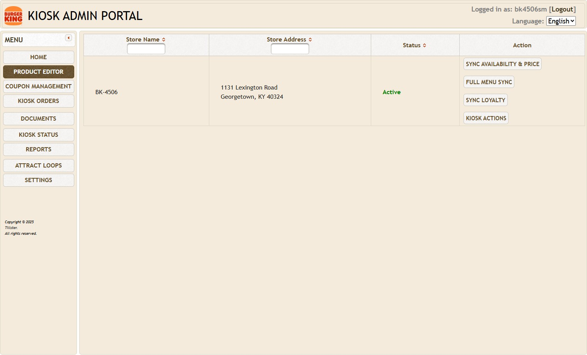
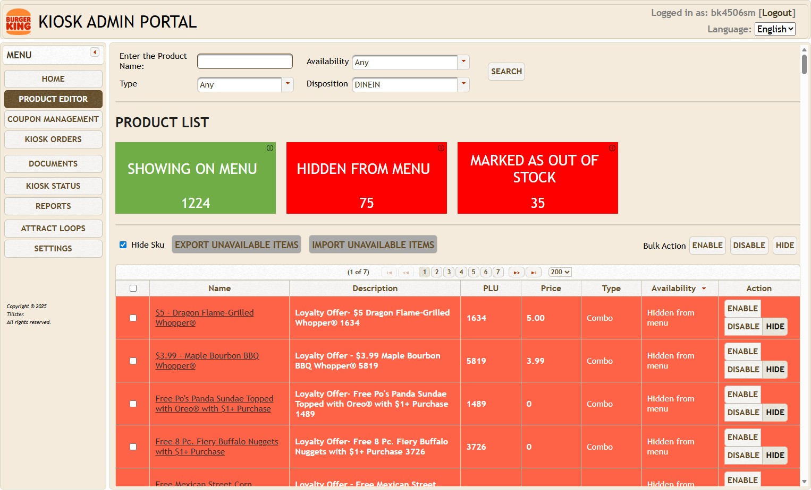
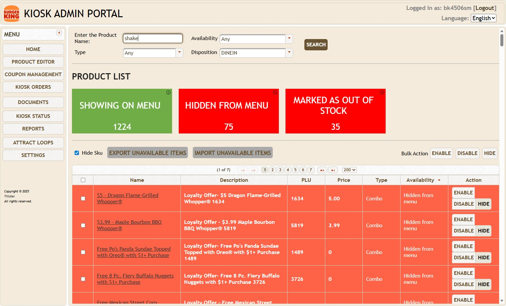
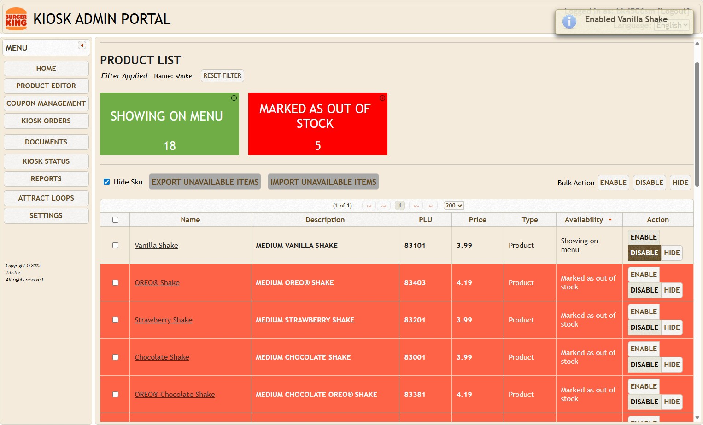
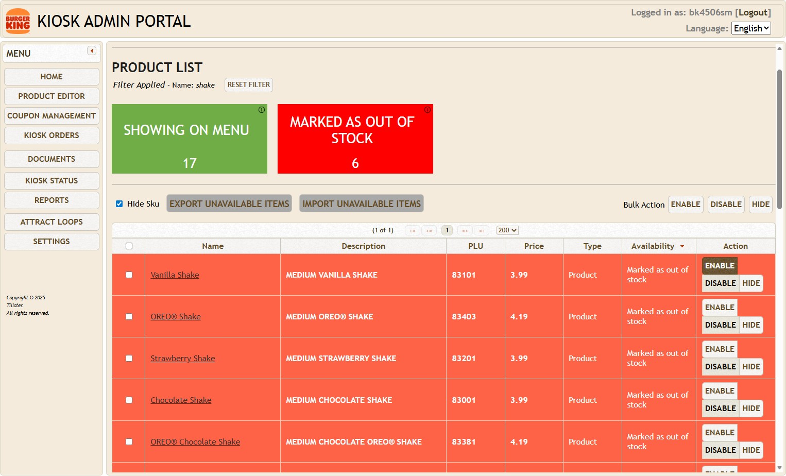
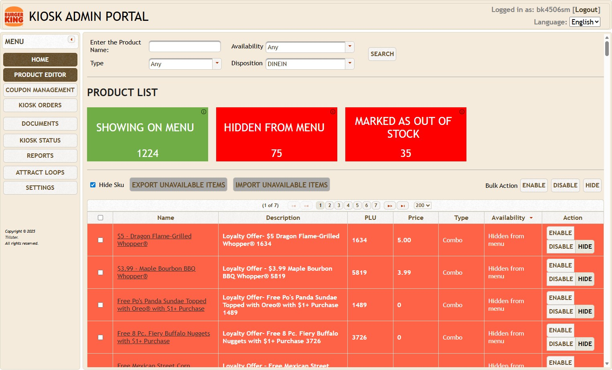
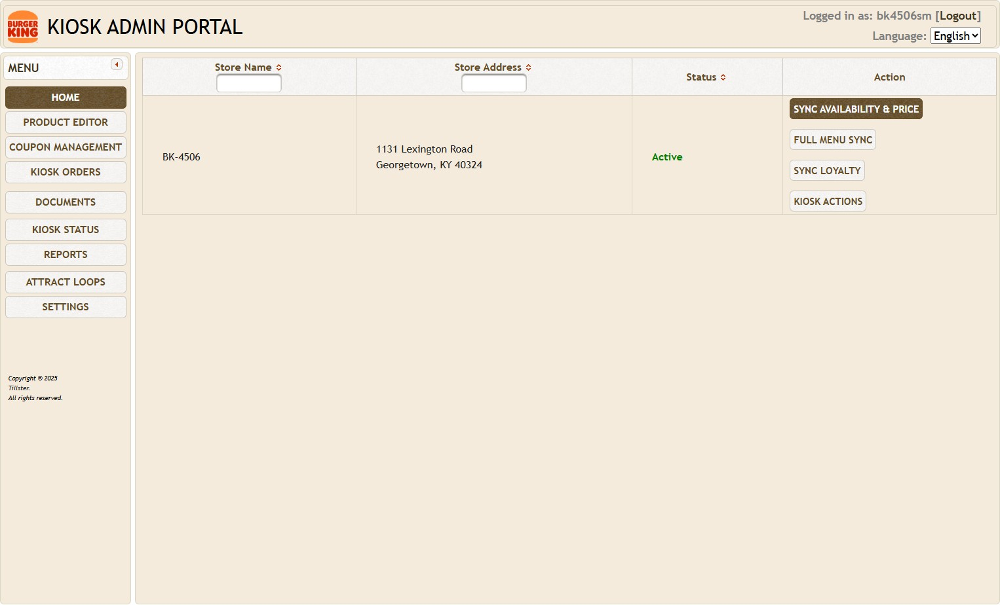

-
1For Sicom: Navigate to http://192.168.1.32/portal-admin-app For PAR: Navigate to <http://192.168.1.20/portal-admin-app>

-
2Click "SIGN IN" Username: bk####sm\ Password: password Username does not have any leading zeros.

Home Overview
-
3Overview of the Home Page

Product Search
-
4Click "Product Editor"

-
5Search for the product you want to mark as sold out or reenable.

-
6Click "Search"

Hide/Disable Products
-
7Click "Disable" or "Hide"

-
Warning
"Disable" marks it as sold out on Kiosk, but still displays it where it normally would on the Kiosk.\ "Hide" will remove it from the Kiosk. It is recommended to select "Hide."
Reenable Product
-
8Click "Enable"

-
Tip
Disabled or hidden items will be highlighted in red.
Sync
-
9Click "Home"

-
10Click "Sync Availability & Price"
